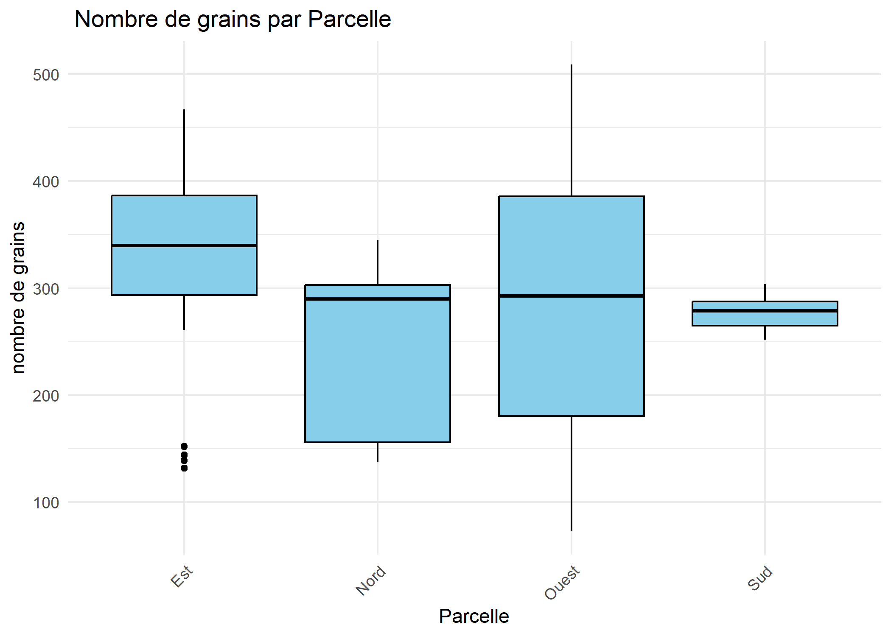

TP ANOVA


La formation des élèves ingénieurs statisticiens économistes de deuxième année comprend un module relatif à l’ANOVA. Ce cours, d’un volume horaire de 20 heures, a pour objectif de permettre aux élèves d’avoir une connaissance approfondie sur les aspects théoriques et pratiques de l’analyse de la variance. Les aspects théoriques portent sur la formalisation du modèle, les différentes composantes de la variance totale, les hypothèses statistiques, les statistiques de test ainsi que l’interprétation des différents paramètres du modèle.
L’analyse de la variance constitue un outil très puissance pour éclaire la prise de décision notamment dans le cas des études d’expérimentation. Elle est utilisée dans presque tous les secteurs d’activités. Le rôle du statisticien est entre autres de donner une explication de ces relations par l’étude de liaisons de variables. Ces liaisons sont appréhendées par plusieurs outils de mesure statistique. Les modèles d’ANOVA peuvent être utilisés pour résoudre ce genre de problème. Une bonne maitrise des techniques d’ANOVA est donc une obligation pour toutes personnes souhaitant évoluer dans le domaine des statistiques.
A la fin du module de formation, pour mettre en pratique les acquis théoriques et approfondir les connaissances, des travaux de groupe par binôme sont organisés. Ce présent rapport de recherche s’inscrit dans ce cadre.
Sur la base des informations disponibles dans notre jeu de données, nous avons décidé de nous intéresser aux facteurs qui impactent les rendements du maïs. Le rendement du maïs est capté à travers le nombre de graines. Le choix du nombre de graines comme indicateur de rendement plutôt que la masse des graines est basé sur une lecture des études déjà réalisées dans le domaine. L’utilisation du nombre de graines comme indicateur de mesure du rendement est largement répandue dans la littérature. C’est le cas par exemple des études réalisées aux Etats unis sur l’impact du taux de semi sur la productivité (Jeschke, 2022), en France sur les conséquences de la variabilité individuelle des plants de maïs dès la phase d’implantation sur la croissance et la production de grain (Pommel & Fleury, 1989) et au Bénin sur les effets de différents modes de gestion des résidus de soja sur le rendement du maïs (Badou et al., 2013). Pour l’étude des facteurs qui impactent le rendement du maïs, nous allons appliquer le modèle d’ANOVA à deux facteurs. Le choix des facteurs à inclure dans le modèle se fera sur une étude de corrélation entre notre variable d’étude (nombre de graines) et les variables qualitatives. Les deux variables qualitatives les plus corrélées à notre variable d’étude seront considérées comme facteurs.
L’objectif général de ce travail est de proposer un modèle d’analyse de la variance en partant des variables disponibles dans notre base de données. Cet objectif général se décline en trois objectifs spécifiques que sont :
Présenter succinctement la théorie sur la technique d’ANOVA à deux facteurs .
Faire une analyse descriptive des variables d’étude .
Déterminer les facteurs qui peuvent expliquer le rendement des maïs.
La suite de ce document est structurée en trois parties. La première partie présente la méthodologie, la deuxième partie fait une analyse descriptive des variables d’étude et la troisième est consacrée à l’analyse de l’ANOVA.
Une premiere inspection de la base nous as conduit a modifier l’individus numero 2 .En effet les valeurs prises par cette individus pour des variables comme Germination.epi ou Enracinement ne sont pas coherente. ##  Premiére inspection
Premiére inspection
Nous avons juge que cela est due a des problemes lors du saisi des donnée. nous vons corrige par :
| Individu | Hauteur | Masse | Nb.grains | Masse.grains | Couleur | Germination.epi | Enracinement | Verse | Attaque | Parcelle | Hauteur.J7 | Verse.Traitement |
|---|---|---|---|---|---|---|---|---|---|---|---|---|
| 2 | 199 | 1431 | 320 | 921 | Rouge | Non | Moyen | Non | Non | Nord | 196 | Oui |
| Individu | Hauteur | Masse | Nb.grains | Masse.grains | Couleur | Germination.epi | Enracinement | Verse | Attaque | Parcelle | Hauteur.J7 | Verse.Traitement |
|---|---|---|---|---|---|---|---|---|---|---|---|---|
| 1 | NA | NA | NA | NA | NA | NA | Faible | NA | Oui | Nord | 171 | NA |
| 2 | 199 | 1431 | 320 | 921.0 | Rouge | Non | Moyen | Non | Non | Nord | 196 | Oui |
| 3 | 205 | 1468 | 290 | 89.4 | Jaune | Non | Moyen | Oui | Non | Nord | 198 | Oui |
| 4 | 173 | 1398 | 147 | 42.6 | Jaune | Non | Faible | Oui | Non | Nord | 176 | Oui |
| 5 | 233 | 1622 | 138 | 43.2 | Rouge | Non | Tres.fort | Oui | Non | Nord | 230 | Oui |
| 6 | 206 | 1428 | 166 | 44.1 | Jaune | Non | Moyen | Oui | Non | Nord | 200 | Non |
Notre jeu de donnée porte sur un échantillon de 100 plantes de maïs. La base de données est composée de 6 variables quantitatives et 7 variables qualitatives. Les variables de la base se résument comme suit :
| Variable | valeur_NA | Moyenne | Variance |
|---|---|---|---|
| Individu | 0 | 50.50000 | 841.6667 |
| Hauteur | 3 | 259.36082 | 1965.8580 |
| Masse | 3 | 1811.61856 | 102708.9051 |
| Nb.grains | 3 | 292.63918 | 10283.1914 |
| Masse.grains | 3 | 96.54742 | 8073.7931 |
| Hauteur.J7 | 0 | 257.36000 | 1934.8994 |
| Variable | Facteurs | Fréquences | Valeurs_manquantes |
|---|---|---|---|
| Couleur | NA, Rouge, Jaune, Jaune.rouge | Jaune ( 48 ), Jaune.rouge ( 22 ), Rouge ( 29 ) | 1 |
| Germination.epi | NA, Non, Oui | Non ( 90 ), Oui ( 9 ) | 1 |
| Enracinement | Faible, Moyen, Tres.fort, Fort | Faible ( 19 ), Fort ( 26 ), Moyen ( 28 ), Tres.fort ( 27 ) | 0 |
| Verse | NA, Non, Oui | Non ( 57 ), Oui ( 42 ) | 1 |
| Attaque | Oui, Non | Non ( 54 ), Oui ( 46 ) | 0 |
| Parcelle | Nord, Sud, Est, Ouest | Est ( 33 ), Nord ( 17 ), Ouest ( 36 ), Sud ( 14 ) | 0 |
| Verse.Traitement | NA, Oui, Non | Non ( 44 ), Oui ( 55 ) | 1 |
Comme présenté dans le tableau récapitulatif de la liste des variables disponibles dans notre jeu, nous disposons de 7 variables qualitatives. La décision de travailler avec un modèle d’ANOVA à 2 facteurs implique un choix des deux variables qualitatives les plus pertinentes pour l’explication du rendement des plantes de maïs. Pour décider des deux facteurs à considérer pour la modélisation, nous nous sommes basés sur le rapport de corrélation de chacune de ces variables qualitatives avec le nombre de graines de la plante. Pour cela, nous avons effectué les tests de corrélation de variables quantitative avec une variable qualitative. Les résultats de ces tests sont consignés dans le tableau ci-dessous :
Pour nos trois variables d’étude, seule la variable dépendante présente des valeurs manquantes. Le nombre de valeurs manquantes pour cette variable est 3. Pour le traitement de ces valeurs manquantes, nous allons utiliser l’imputation par la moyenne.
# Calcul de la moyenne de la variable en ignorant les valeurs manquantes
mean_value <- mean(data$Nb.grains, na.rm = TRUE)
data$Nb.grains[is.na(data$Nb.grains)] <- mean_value
# Vérification
# Doit être égal à 0
if (sum(is.na(data$NB.grain)) == 0) {
# Sauvegarde
write_delim(data, "data/data_corrige.csv", delim = ";")
cat("Operation réussi")
}Operation réussiWarning: The dot-dot notation (`..count..`) was deprecated in
ggplot2 3.4.0.
ℹ Please use `after_stat(count)` instead.
This warning is displayed once every 8 hours.
Call `lifecycle::last_lifecycle_warnings()` to see where
this warning was generated.
L’analyse univariée des deux variables qualitatives permet de voir la répartition des plantes suivantes les modalités de chaque variable. Pour chacun des deux facteurs, les modalités n’ont pas les mêmes effectifs. Le plan est donc déséquilibré
ggplot(data, aes(y = Nb.grains)) +
geom_boxplot(outlier.color = "red", outlier.shape = 16, outlier.size = 3, fill = "skyblue") +
theme_minimal() +
labs(
title = "Distribution de Nb.grains",
y = "Nombre de grains"
) +
theme(
plot.title = element_text(hjust = 0.5, face = "bold", size = 14),
axis.text = element_text(size = 12),
axis.title = element_text(size = 13)
) Si on considère la variable dépandante nombre de grain isolément, l’analyse du boxplot montre qu’il n’y a pas de valeurs abérrantes.
Si on considère la variable dépandante nombre de grain isolément, l’analyse du boxplot montre qu’il n’y a pas de valeurs abérrantes.
ggplot(data_group) +
aes(x = reorder(Parcelle, mean), y = mean, fill = Parcelle) +
geom_col() +
scale_fill_hue(direction = 1) +
theme_minimal() +
labs(title = "Nombre de grain moyenne par Parcelle", x = "Parcelle", y = "Moyenne nombre de grain")
L’analyse du nombre moyens de grins suivant la parcelle montre que les plantes de mais situées dans la parcelle Est ont en moyenne un rendement plus élevé, suivies de celles situées dans la parcelle Ouest. Les plantes situées dans la parcelle ont le rendement le plus faible.
 Les boxplots de la variable dépendante suivant les parcelles montrent la présence de valeurs aberrantes pour la parcelle Est. Mais le test de la méthode de Turkey montre que ses valeurs ne sont pas extrêment atypes (is.extreme=FALSE)
ggplot(data_group) +
aes(x = reorder(Enracinement, mean), y = mean, fill = Enracinement) +
geom_col() +
scale_fill_hue(direction = 1) +
theme_minimal() +
labs(title = "Nombre de grain moyenne par niveau d'enracinement", x = "Enracinement", y = "Moyenne nombre de grain")L’analyse du nombre moyens de grains suivant le niveau de l’enracinement montre que les plantes de faible niveau racinement ont en moyenne un rendement plus élevé, suivies de celles de niveau très fort. On note toutefois que les écarts entre les moyennes des différents groupes sont faibles.
 On note l’absence de valeurs aberrantes si on considère les boxplots suivant le niveua de l’enracinement
On note l’absence de valeurs aberrantes si on considère les boxplots suivant le niveua de l’enracinement
library("ggpubr")
bxp <- ggboxplot(
data,
x = "Enracinement", y = "Nb.grains",
color = "Parcelle", palette = "jco"
)
bxp
Nous avons deux valeurs extrêmement abérante,nous decidons de les suprimmer.
# Identifier les outliers
outliers <- data %>%
group_by(Parcelle, Enracinement) %>%
identify_outliers(Nb.grains)
data_clean <- data %>%
anti_join(outliers %>% filter(is.extreme), by = c("Parcelle", "Enracinement", "Nb.grains"))
cat("Nombre de lignes après suppression :", nrow(data_clean), "\n")Nombre de lignes après suppression : 97 write_delim(data_clean, "data/data_corrige.csv", delim = ";")
data <- data_clean
cat("Fichier sauvegardé avec succès.")Fichier sauvegardé avec succès.Apres suppressions nous obtenons de nouveau une valeur extreme , en la suprimmant nous n’obtenons plus de valeur extreme.
Shapiro-Wilk normality test
data: data$Nb.grains
W = 0.97189, p-value = 0.03528Étant donné que la p-value est de 0.03528, ce qui est inférieur au niveau alpha de 0.05, nous rejetons l’hypothèse nulle :on ne peut donc pas affirmer que nos données sont normalement distribué. Procedons a des transformations
Shapiro-Wilk normality test
data: log(data$Nb.grains)
W = 0.9195, p-value = 1.747e-05toujours pas concluante
La transformation de Box-Cox peut être utilisée pour rendre les données plus symétriques et plus conformes à une distribution normale. Cela peut faciliter l’analyse statistique, en particulier lorsque des tests statistiques qui supposent une distribution normale sont utilisés. Le choix optimal de la valeur de lambda dépend de la distribution initiale de la variable et peut être déterminé en utilisant une procédure de recherche d’optimisation sur la fonction de vraisemblance de l’échantillon ici notre jeu de donées.

Notre paramètre optimal λ est donc entre ]1, 5; 1, 99[. Prenons λ = 1, 95 on fait donc une transformation de la hauteur de la forme :
dataNb.grainbc = (dataNb.grainλ − 1)/λ
lambda <- 1.95
data$Nb.grain_bc <- (data$Nb.grains^lambda - 1) / lambda
shapiro.test(data$Nb.grain_bc)
Shapiro-Wilk normality test
data: data$Nb.grain_bc
W = 0.9612, p-value = 0.005835library(ggpubr)
shapiro_results <- data %>%
group_by(Enracinement) %>%
summarise(p_value = shapiro.test(Nb.grains)$p.value, .groups = "drop")
# Afficher les résultats
print(shapiro_results)# A tibble: 4 × 2
Enracinement p_value
<chr> <dbl>
1 Faible 0.508
2 Fort 0.130
3 Moyen 0.159
4 Tres.fort 0.0514# Graphique QQ-Plot avec facettes
ggqqplot(data, "Nb.grains", ggtheme = theme_bw()) +
facet_grid(Parcelle ~ Enracinement)Puisque l’hypothese de normalite n’est pas verifié, nous allons passer a l’anova non paramétrique a deux facteur.
DV: Nb.grains
Observations: 97
D: 0.9999737
MS total: 792.1667 Enracinement: (p = 0.682) Pas d’effet significatif sur le nombre de grain
Parcelle : (p = 0.025) effet significatif, indiquant que la parcelle a un impact surle nombre de grain
Interaction: (p = 0.154) pas d’interaction significative entre Enracinement et Parcelle.
Puisque Parcelle est significatif, on peut faire un test post-hoc .
Warning: Parcelle was coerced to a factor. Comparison Z P.unadj P.adj
1 Est - Nord 2.9674741 0.003002576 0.01801546
2 Est - Ouest 1.8636861 0.062365801 0.37419481
3 Nord - Ouest -1.4529390 0.146240679 0.87744407
4 Est - Sud 2.4611644 0.013848690 0.08309214
5 Nord - Sud -0.2825197 0.777545008 1.00000000
6 Ouest - Sud 1.0380121 0.299264441 1.00000000Il existe une difference significative entre les parcelles Nord et Est au seuil de 5% . Pour les parcelles Est-Sud, la difference est signigicative au seuil de 10% (p-value ajusté) Le test de Dunn nous permet de conclure que la parcelle Est est significativement différente de la parcelle Nord en terme de nombre de grain .
library(ggplot2)
ggplot(data, aes(x = Parcelle, y = Nb.grains, fill = Parcelle)) +
geom_boxplot() +
theme_bw() +
ggtitle("Comparaison du nombre de grains par Parcelle")Cette étude visait à évaluer l’effet de la parcelle sur le nombre de grains produits. Les analyses statistiques ont révélé une différence significative entre les parcelles, avec un impact notable de la localisation sur la production. En particulier, la parcelle “Est” a montré une production significativement plus élevée que la parcelle “Nord”, tandis que les autres comparaisons ne se sont pas révélées statistiquement significatives après correction. Le boxplot confirme cette tendance, illustrant des différences de médianes et de variabilité entre les parcelles. Ces résultats suggèrent que des facteurs environnementaux propres à chaque parcelle, tels que le sol, l’exposition ou les conditions climatiques, pourraient influencer la production de grains. Des analyses complémentaires seraient nécessaires pour approfondir ces observations et optimiser les conditions de culture en fonction des spécificités de chaque parcelle.